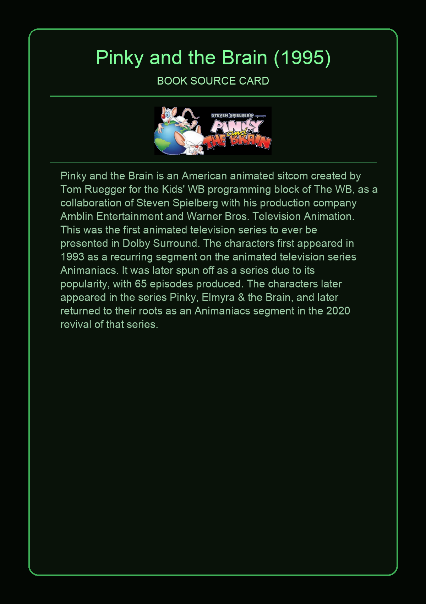
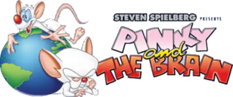

Pinky and the Brain is an American animated sitcom created by Tom Ruegger for the Kids' WB programming block of The WB, as a collaboration of Steven Spielberg with his production company Amblin Entertainment and Warner Bros. Television Animation. This was the first animated television series to ever be presented in Dolby Surround. The characters first appeared in 1993 as a recurring segment on the animated television series Animaniacs. It was later spun off as a series due to its popularity, with 65 episodes produced. The characters later appeared in the series Pinky, Elmyra & the Brain, and later returned to their roots as an Animaniacs segment in the 2020 revival of that series.
This page aggregates references to the source material behind Name Lore entries.